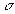
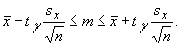
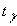
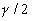
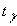
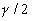
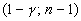

Доверительный интервал для средней при неизвестной дисперсии
При неизвестном  и объеме выборки n<30 доверительный интервал рассчитывается по формуле

Величины  и sx
определяются по выборке. Величина  представляет собой значение аргумента
функции распределения Стьюдента, при котором ее
значение равно . Эту величину можно
найти либо по соответствующим статистическим
таблицам, либо вычислить с помощью функции Excel
и sx
определяются по выборке. Величина  представляет собой значение аргумента
функции распределения Стьюдента, при котором ее
значение равно . Эту величину можно
найти либо по соответствующим статистическим
таблицам, либо вычислить с помощью функции Excel
=СТЬЮДРАСПОБР.